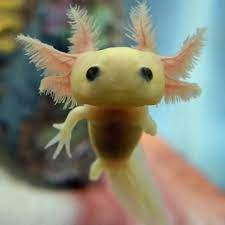

Lugares que você precisa conhecer.

Cataratas do Iguaçu
Eu visitei em dezembro de 2021 e em .
Cataratas do Iguaçu (em castelhano: Cataratas del Iguazú) é um conjunto de cerca de 275 quedas de água no rio Iguaçu (na Bacia hidrográfica do rio Paraná)

Beach Park
Eu visitei em dezembro de 2015.
Compre Agora! Você não Pode Ficar de Fora Dessa, Férias de Julho é aqui no Beach Park. Aproveite os descontos. Conheça Nossos Resorts. Destinos: Beach Park, Wellness Resort. Compre o Seu Ingresso · Acqua Resort · Conheça o Beach Card · Pacotes de Hospedagem
Critica de filmes
Ótimo filme
O pirata Jack Sparrow tem seu navio saqueado e roubado pelo capitão Barbossa e sua tripulação. Com o navio de Sparrow, Barbossa invade a cidade de Port Royal, levando consigo Elizabeth Swann, filha do governador. Para recuperar sua embarcação, Sparrow recebe a ajuda de Will Turner, um grande amigo de Elizabeth. Eles desbravam os mares em direção à misteriosa Ilha da Morte, tentando impedir que os piratas-esqueleto derramem o sangue de Elizabeth para desfazer a maldição que os assola.

Ótimo filme
O Dr. Robotnik retorna à procura de uma esmeralda mística que tem o poder de destruir civilizações. Para detê-lo, Sonic se une a seu antigo parceiro, Tails, e parte em uma jornada para encontrar a joia antes que ela caia em mãos erradas.
Lista de livros

